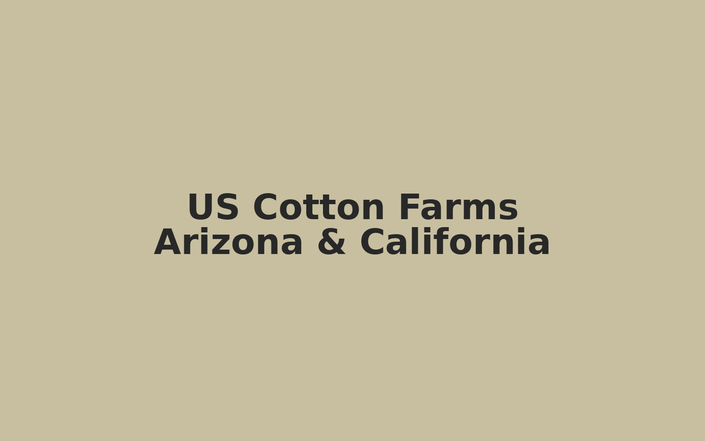
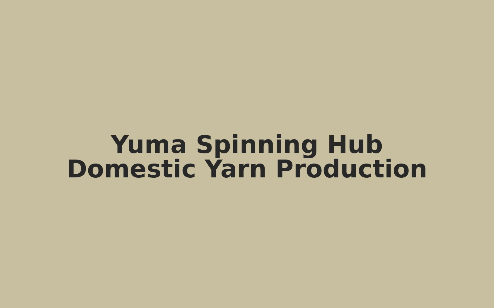
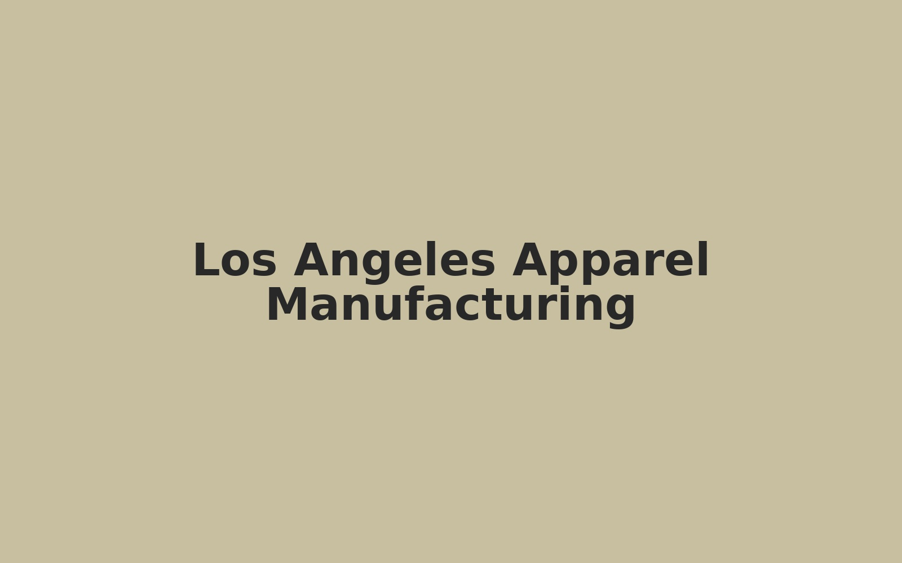

From Arizona and California cotton farms to a Yuma spinning hub and Los Angeles apparel manufacturing, MATGA USA reconnects agriculture, industry, and jobs into one modern domestic supply chain.



Arizona and California cotton provides premium domestic fiber as the chain's starting point.
A Yuma spinning hub transforms raw cotton into yarn, creating industrial jobs and regional capability.
Los Angeles manufacturing converts yarn into high-value Made in USA apparel and textile products.
Keep more value in the U.S. from the first step of the chain.
Anchor new manufacturing employment in Yuma.
Reduce dependence on offshore spinning and long lead times.
Support domestic apparel programs with traceable yarn.